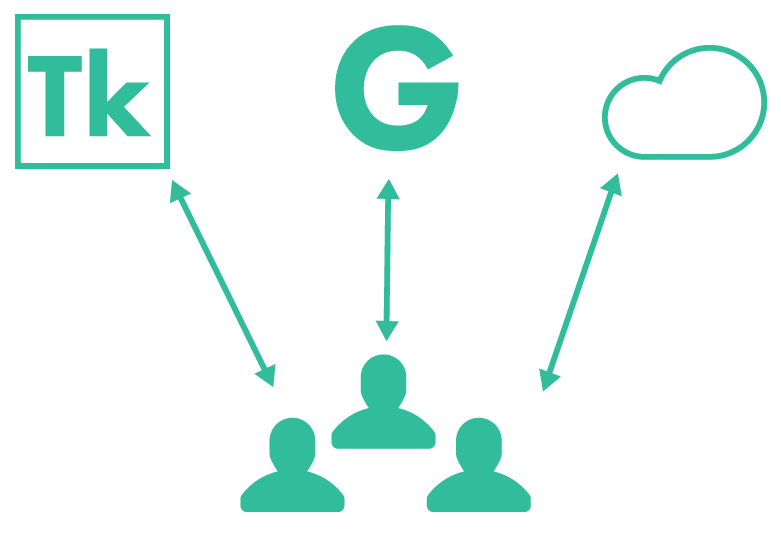
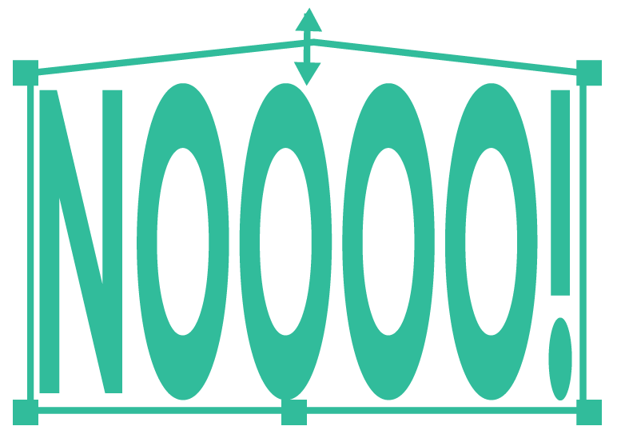
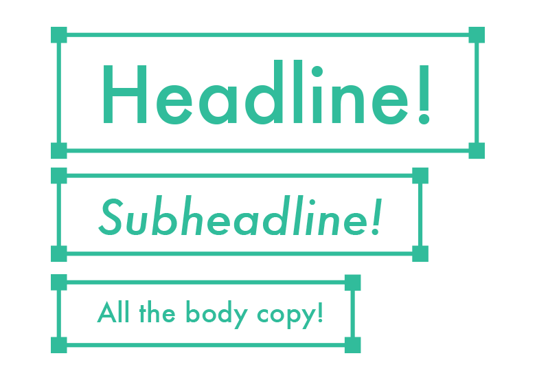
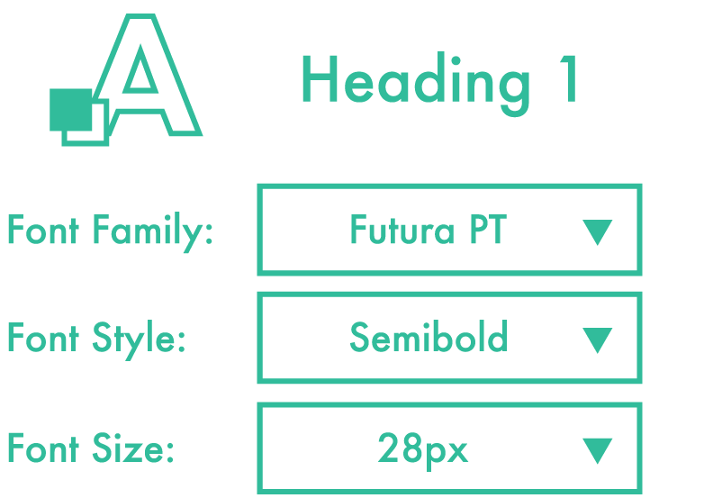

字体 虽然有时候很繁琐, 但是在 Photoshop 中字体仍然是一个关键的元素。为了避免以后让自己或其他人踩坑, 设计师要负责任地处理字符和段落样式等。 统一字体 使用与您的团队一致的字体库进行设计。 i  统一字体 没有字体管理是很不好的。让每个设计师都使用 Typekit 或共享文件夹中有版权的字体。 不要拉伸字体 网页上通过HTML/CSS代码很难做到好看的的拉伸的效果i  不要拉伸字体 你如果拉伸某个字体给了前端宝宝，那他真的会怀疑人生的。 控制好文本框 使用PS的文本框是非常好的习惯，但是不要把文本框拉得太高太多余。i 控制好文本框 文本框如果太高，你就没办法选择文本框下面的元素了，这样子在设计的时候很烦的。 分开不同的文本框 标题、正文使用单独的文本框处理，不要混合在一起编辑i  分开不同的文本框 合在一起操作非常不便，需要多次的点击来找到一个文本框中不同类型的字体，不好设置字体，字号等。 使用字符样式统一文字样式 给每个文字设置字体是很麻烦的。i  使用字符样式统一文字样式 使用字符样式会让你的工作效率提高100倍。